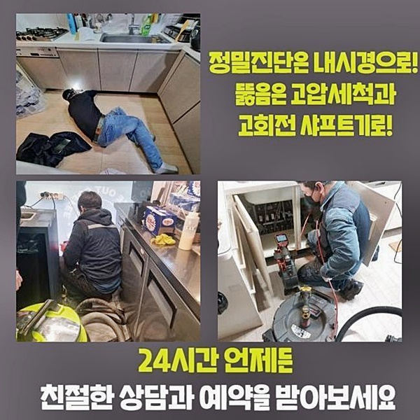
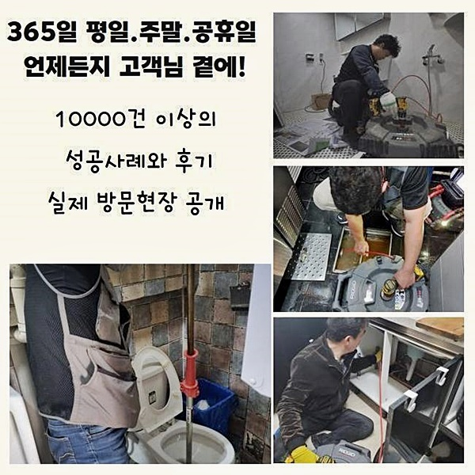
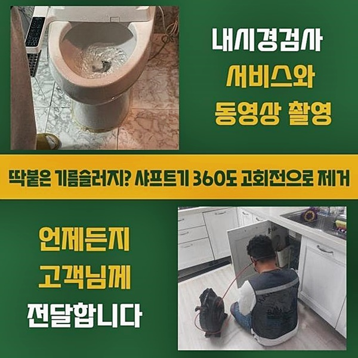
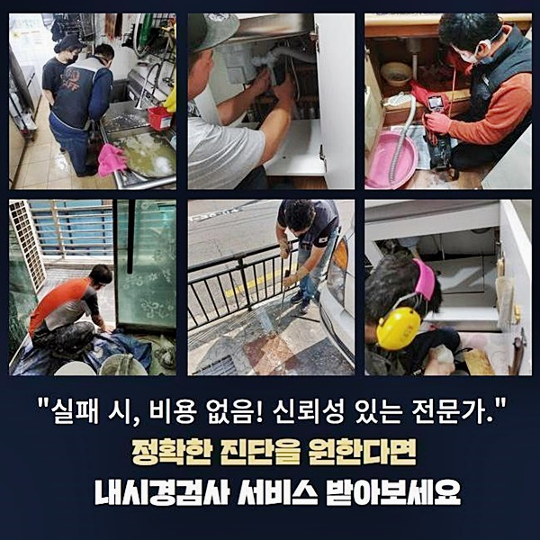
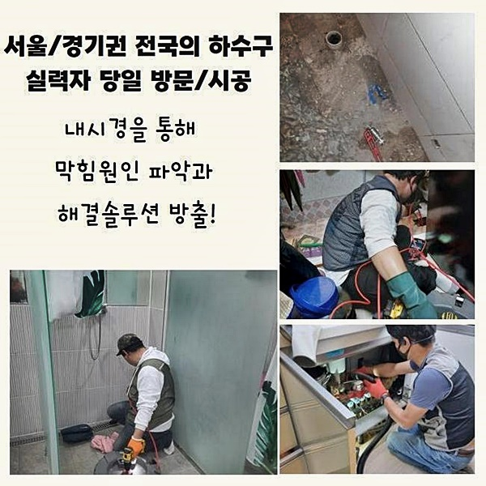
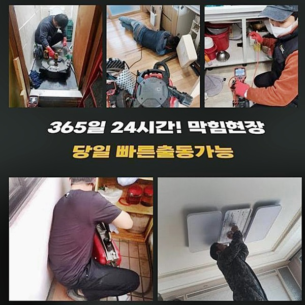
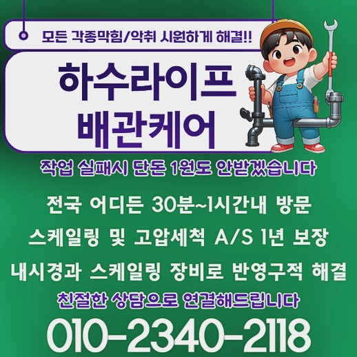

🏠 부천 심곡본동세탁실막힘 역곡동 배수구뚫기 배관전문
용인 싱크대막힘 전문 시공 후기

📋 작업 개요
- 위치: 용인
- 서비스 유형: 싱크대막힘, 하수구막힘, 배관막힘, 역류해결, 뚫는업체, 배관청소, 고압세척
- 작업 일시: 2024. 8. 20. 10:07
- 업체명: 하수구수사대 (010-5615-2118)
🔍 문제 상황
인사드립니다
하수배관 막힘의 장소에 항상 문제없이 방문드리는 배수관막힘 전문업체에요
이전에 의뢰자분께서 다목적실 하수배관에 이상이 있다고 전화를 주셨기에 막힘장소에 찾아갔습니다
부천 심곡본동세탁실막힘 역곡동 배수구뚫기 배관전문
배수가 전혀 되지 않으면서 냄새까지 퍼지게 되어 서둘러 저희 전문가에게 도움을 요청하셨습니다
저희 수리업체는 관련 발생장소에 도착하여 배수가 안되는 이슈의 근원을 파악하고 깨끗하게 해소하여 드렸어요
어떠한 방법으로 물막힘의 근원을 발견해 고치게 되었는지 함께 살펴보며 안내해드릴게요
혹여라도 동일한 상황에 처하게 된다면 차분하게 이 글의 자료를 참고하면 좋을 듯 합니다
저희 전문기사님이 찾아간 장소는 주거밀집지로 고객님 가구의 다용도실 내부에 세탁기 배수관이 막힌것 같다고 전해주셨어요
의뢰인분의 말씀을 참고해 상태를 체크해보니 고약한 냄새가 나면서 비눗물이 올라오며 역류하는 상태였습니다
뚫기에 앞서 확실한 이유를 조사해보려고 배수관 악취를 어떤 시점부터 인지하시게 되었는지 차근차근 여쭈어 보았습니다

🔎 원인 분석
💡 전문가 진단: 정밀 진단 장비를 사용하여 슬러지의 고착 여부를 판명하고 타격/세척 작업을 실시했습니다.
의뢰인은 분명하지는 않지만 한달가량 전쯤부터 물이 흐르는 상태가 느려졌던 느낌이 들었다고 대충이나마 기억을 더듬어 이야기했어요
하수배관 막힘이 일어나면 주로 예상치 못하게 일이 벌어졌다고 여기시겠지만 문제 문제공간에는 이같은 사전 징후가 있어요
그런데 이상황을 심각하게 여기지 않으며 무시하고 지나쳐 결국 그날 아침처럼 물이 배출되지 않는 현상들까지 벌어진 것입니다
물을 이용하는 장소라면 하수관에서 발생하는 심각한 냄새가 아닐지라도 세면볼이나 주방싱크등 불쾌한 냄새가 날 가능성이 있게 됩니다
심한 냄새가 발생하는 것 이는 결국 하수구 내부에서 찌꺼기가 부패한다는 징후라고 여기시면 장애가 생겼다는 걸 쉽게 떠올릴 수 있어요
막힘장소에 방문해 물을 흘려보내니 고객께서 말한 그대로 기포들이 되돌아나오면서 악취도 풍기게 되었습니다
이같이 하수관 고약한냄새가 올라오면 안의 더러운 물질을 꺼내는 작업이 필요하므로 제일 첫단계로 석션기구로 첫번째 청소 작업을 실행하였습니다
석션장비는 가정집에서 사용하고 계신 깊은 부분에 이물질을 없애는 것은 쉽지 않지만 입구 부분의 더러운 물질을 제거하는 것은 수월했습니다
저희 베테랑은 어떤 문제장소든 체계없이 여러 방법들을 수행하는 것이 아닌 단계별로 진행하며 필요없는 과정들을 제외합니다
배수관 내부에 카메라장치를 넣어도 되지만 심각한 상태가 아니면 흡입장비로 일반적으로 상황들이 해결될 수 있기 때문입니다
전문팀이 발생장소에 도착후엔 어떠한 절차로 막힘장애를 해결하는지가 최종적으로는 의뢰인의 요금으로 부과되니 신중해야합니다
저희 베테랑은 어느 장소든 요인을 정확하게 밝혀내고 수리하는 절차에서 의뢰인의 지출 부분까지 생각하여 부적절한 과정을 수행하지 않고 있습니다

🔧 작업 과정
먼저 석션기기를 활용해 안쪽 오염물을 빼내는 업무를 수행하니 모래알 같은 침전물이 확인되었어요
오염물을 확인하니 하수관 속 악취를 발생시키는 또다른 오염물인 기름찌꺼기가 속안에 있다는 점을 짐작할 수 있었습니다
따라서 하수배관 내시경장치를 사용해 막힌 오염물이 어느위치에 얼마나 축적되었는지 낱낱이 확인해보기로 했습니다
배수관 내시경장치는 길고 가느다란 파이프 끝에 램프와 카메라가 한개의 장치로 결합되어 있고 반대편 끝부분엔 화면이 달려 있어요
어둡고 좁은 하수관 안의 상황들을 라이브로 살펴볼 수 있어서 원인을 밝혀 철저하게 처리할 수 있게 돕는 도구입니다
배수관 속에 넣어보니 이물질 덩어리들이 관찰되었고 모래와 흡사한 잔여물도 관찰되었어요
우리 기술자가 찾아간 현장은 하수구 내부 깊이 막힘을 초래하는 오염물은 배수관 세척기기가 삽입되기 힘들어서
연장 호스를 이어서 연결한 후 작업을 진행하거나 플렉스 샤프트 장비를 활용하여 갈아내고 닦아내는 처리작업을 진행합니다
저희 베테랑은 이처럼 실무 노하우들이 풍부해 문제를 발견해내는 데 차질이 생기지 않으며 문제를 발견해도 효과적인 수단으로 없앨 수 있기 때문에 고객의 염려를 개운하게 처리해 드리고 있습니다
이와 같이 계획이 결정된 후엔 지체하지 않고 배수관 속을 세정하며 불순물을 배출시켜 하수배관 악취 발생으로 불편을 주는 막힘의 요소를 해결합니다
기본 작업 후 끝나지 않고 수차례 다시 시도해 실행한 후 오수가 정상적으로 흐르는지 물 배출 검사로 점검하고
다시 배관 카메라 장비를 투입해 조사하면서 남아있는 찌꺼기는 없는지 깨끗하게 씻겨졌는지 점검합니다
우리 기술자가 점검했던 장소는 반복적으로 문제를 야기하는 것들을 확인하여 확실히 말끔하다고 진단되면 절차를 마무리짓습니다
하수구에서 제거한 잔여물들이 이처럼 많아서 역겨운 냄새가 퍼지고 찌꺼기가 퇴적되면서 역류 현상도 나타났습니다
간간이 부엌싱크대랑 이어진 배수파이프의 경우 요리하며 발생한 지방질이 배수구에 흡착되어 가면서 기름덩어리 혹은 음식물 잔재들이 발견되기도 합니다
이런 상황에서는 하수구 시스템이 주방싱크와 세탁기의 하수관이 연결되어 있으므로 부엌 싱크에서 사용된 물들이 세탁실 배수관으로 역류 현상이 나타나기도 합니다
이러한 사안은 고난도의 상황이기 때문에 우리팀처럼 전문 기술자만 처리가 가능한 상태이기 때문에 불쾌한 냄새가 배수구에서 배어나오고 배수상황이 순조롭지 않다고 여겨진다면 위에서 검토한 예시처럼 배수장애가 나타나기 전 징조인 것을 알아두시기 바랍니다
막힘문제가 일어나기 전 수리기사에게 시공을 의뢰하시면 방지가 가능한 부분들을 참고해주시면 유용하실거예요


✅ 작업 완료
내방전에도 전화 연락으로 상세히설명드리며 방문하고 나서도 꼼꼼한 검사를 완료하여 고객님 가정에 적합한 최적의 방안을 선보이고 있습니다
올바른 해결책을 통해 배수장애를 해소하기를 바랍니다 부적절한 시공방법을 사용해 자택에서 처리를 해보려고 하시는데
거꾸로 상태를 심각하게 만드는 경우가 흔한일이기에 저희 팀에게 재상담을 자주 주시고 있어요
가정집에서 해결될 수 있다면 괜찮지만 문제가 심화되는것을 막으려면 가장먼저 상담을 받아 보는 것이 올바른 판단입니다
상담 창구는 24시간 열려있어요 언제든지 문의주신 후 문제를 처리하시기 바래요




⚠️ 주방 싱크대 배관 막힘 예방 수칙
- ✅ 기름기가 묻은 식기나 프라이팬은 설거지 전 키친타올로 반드시 기름때를 닦아내세요.
- ✅ 주기적으로 싱크대 개수대에 뜨거운 물을 가득 받아 한 번에 내려 배관 내부 기름을 씻어내세요.
- ✅ 배수구 거름망을 미세한 필터로 사용하시고 음식물 찌꺼기가 틈으로 새어 들지 않게 관리하세요.
- ✅ 베이킹소다와 식초를 뜨거운 물과 함께 일주일에 한 번씩 부어주면 배관 살균과 막힘 예방에 좋습니다.
💡 핵심 정리
- 확실한 장비 작업(내시경 점검 및 샤프트 스케일링)으로 원인을 뿌리 뽑습니다.
- 작업 후 1년 이내에 동일한 부위 재발 시 100% 무상 A/S 서비스를 보장합니다.
- 서울 · 경기 · 인천 전 지역에 24시간 언제든 긴급 출동할 수 있도록 항시 대기 중입니다.
❓ 자주 묻는 질문 (FAQ)
🚨 용인 싱크대막힘 문제로 고민이신가요?
정확한 원인 진단과 확실한 시공으로 재발 없는 해결을 약속드립니다.
24시간 긴급 출동 | 서울 · 경기 · 인천 전지역 | 1년 내 재발 시 무상 A/S